왜 이 분석을 했는가
지역별로 반복되는 신고를 발견하는 것만으로는 예방안이 완성되지 않습니다. 그 지역의 실제 환경, 서비스를 이용할 수 있는 조건, 이미 시행한 조치까지 확인해야 합니다.
이번 조사에서는 부산시가 인정한 AED 설치정보 불일치, 현장조사의 보차 미분리 구간, 2026년 소방시설 불량 기록을 확인했습니다. 동시에 시설 정비·현지시정·폐장 후 안전관리·사업 효과평가가 이미 존재한다는 근거도 확인했습니다.
프로젝트의 문제제기는 “어디에 신고가 많은가”에서 “그 지역에서 확인된 문제와 기존 대응을 어떻게 함께 판단할 것인가”로 이어집니다. 우리의 결과물은 신고·현장·운영·조치 자료의 시점과 범위를 맞춰 보여주는 분석과 서비스 시제품입니다.
행정에 이런 분석이나 서비스가 전혀 없다고 주장하지 않습니다. 기존 검색·지원·평가를 재사용하면서, 지역별 근거를 비교하고 이미 조치된 사항과 추가 확인이 필요한 사항을 구분하는 것이 이번 구현의 차별점입니다. 문제제기·정부 기존 업무·보완 논리 상세
부산 전체에서 다시 출발했습니다
2020–2024 신고 704,689건을 유지하고, 정상 처리·운영성 분류 제외 574,662건을 중심으로 비교했습니다. 관측된 194개 지역명과 예방 관련 5개 유형의 970개 조합을 세 처리조건으로 계산했습니다. 관측 0과 비교 불가도 남겼습니다.
이번 추가 자료는 공식 교통 점검 14곳, 보행환경 현장연구 4지역·20구간, 소방서 4곳의 최신 조사 132행, AED 운영 및 주택지원 자료, SGIS 2024 주택구성입니다. 서로 다른 자료의 건수를 하나의 분모로 합치지 않았습니다.
194개 지역 결과 직접 탐색 전체 비교표 내려받기
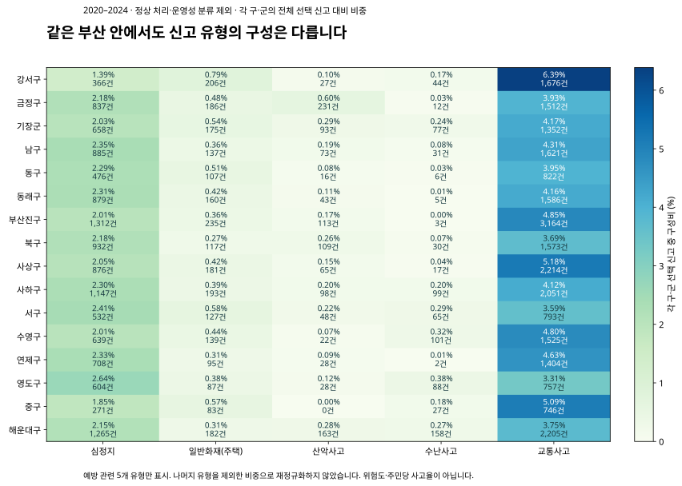
각 구·군의 전체 선택 신고 대비 구성비. 사고 위험률이나 정책 우선순위가 아닙니다.반복성은 유지돼도 시간 전략은 달라집니다
세 처리조건 모두에서 결측 제외 전후 5년 반복성과 증감 방향이 유지된 조합은 325개였습니다. 이 중 전후 기간의 주말·평일 비율을 유한하게 비교할 수 있는 322개 중 144개는 1배 기준의 방향이 달라졌습니다.
작은 건수의 영향을 확인하기 위해 매년 최소 5·10·20건 조건도 비교했습니다. 매년 20건 이상인 86개에서도 32개가 방향을 바꿨고, 19개는 0.9배 미만에서 1.1배 초과 또는 그 반대로 바뀌었습니다. 이 기준은 민감도 비교용이며 후보 선정 점수가 아닙니다.
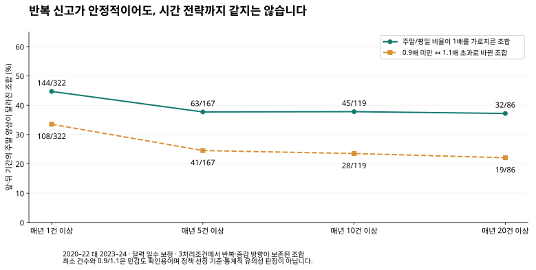
전체 5년으로 고른 사례의 기술적 민감도입니다. 미래 예측 검증·통계적 유의성·서비스 부족 판정은 아닙니다.| 매년 최소 건수 | 대상 조합 | 비율 비교 가능 | 1배 기준 방향 변화 | 0.9↔1.1 기준 변화 |
|---|
| 1 | 325 | 322 | 144 | 108 |
| 5 | 167 | 167 | 63 | 41 |
| 10 | 119 | 119 | 45 | 28 |
| 20 | 86 | 86 | 32 | 19 |
못골시장 밖으로 심층 대상을 넓혔습니다
다음 지역은 신고 건수 순위로 선정한 것이 아니라, 추가로 확보한 현장조사·공식 점검·운영 근거가 있어 검토 범위를 넓힌 사례입니다. 동 이름의 교통 신고는 배경 비교이며 해당 시장·교차로에서 발생한 사고 수가 아닙니다.
| 지역명 | 추가 확인 장소 | 교통 신고 | 2020→2024 | 잔존율 | 선택 영향 | 확장 이유 |
|---|
| 부산진구 부전동 | 부전시장 | 723건 | 168 / 163 / 138 / 138 / 116 | 48.7% | 이 조건에서 증감 방향 유지 | 시장 내·외부도로의 실제 보행조건 조사 |
| 수영구 광안동 | 광안역 주변 | 611건 | 112 / 169 / 126 / 108 / 96 | 54.1% | 이 조건에서 증감 방향 유지 | 보차 미분리 구간과 주변 보행조건 조사 |
| 사하구 신평동 | 신평역 주변 | 233건 | 48 / 49 / 52 / 41 / 43 | 43.7% | 이 조건에서 증감 방향 유지 | 도로 조건과 횡단 대기를 구분한 현장조사 |
| 연제구 거제동 | 거제시장 주변 | 423건 | 92 / 87 / 80 / 78 / 86 | 53.3% | 증감 방향 민감 | 시설 계획과 예산심사에 나타난 구간·근거 확인 |
| 중구 남포동5가 | 남포사거리 | 56건 | 9 / 13 / 15 / 8 / 11 | 65.9% | 증감 방향 민감 | 기존 횡단보도 사업·주정차 단속 운영 확인 |
| 동구 범일동 | 부산진시장 앞 | 231건 | 41 / 40 / 60 / 48 / 42 | 52.6% | 증감 방향 민감 | 공식 점검 개선 항목과 후속 확인 범위 |
범일동·거제동·남포동5가는 결측 제외 전후 증감 방향이 바뀝니다. 현장 근거가 있다는 이유로 신고 증가·감소 해석까지 안정적인 것으로 바꾸지 않았습니다.
부전·대연·광안·신평: 실제 보행환경 조사를 대조했습니다
부산연구원 연구는 2024년 10월 26–27일 네 지역 20구간, 총 5,113.4m를 조사했습니다. 보차 분리 12구간, 미분리 8구간이 기록돼 있습니다. 부전시장 내부도로 4구간 중 2구간, 광안역 주변 내부도로 2구간 모두가 미분리로 집계됐습니다.
체험복 착용·미착용 조건의 평균 보행시간 비교도 공개돼 있습니다. 부전시장 내부도로의 공개 평균은 194.3초와 258.6초입니다. 실제 고령자 표본이 아니라 30대 여성 조사원의 체험복 실험이므로 고령자 평균 속도나 현재 신호시간 부족을 입증한 값으로 사용하지 않습니다.
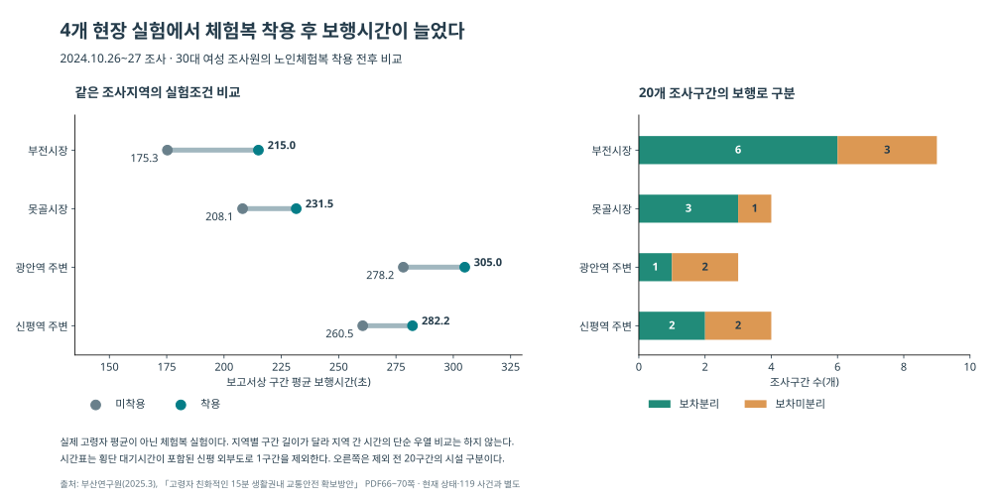
2024 현장조사·체험복 실험. 속도표는 신평 외부도로의 횡단 대기 포함 1구간을 제외했습니다.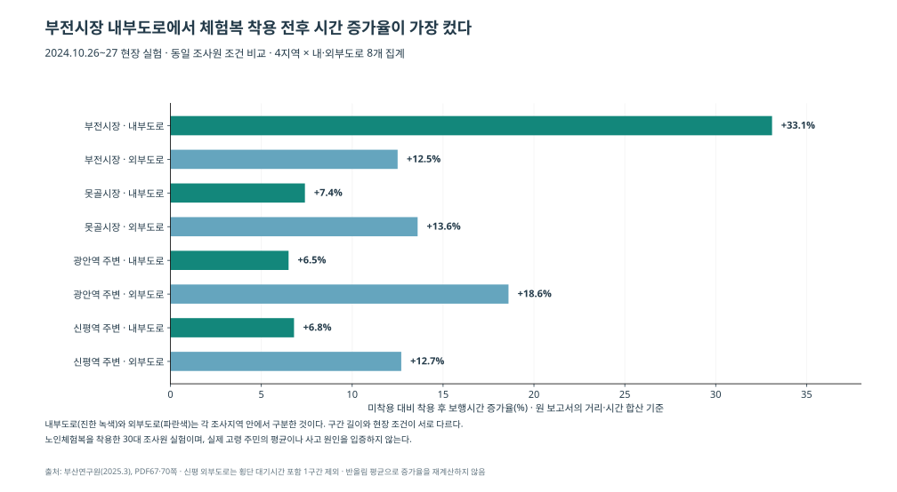
공개된 지역×내외부도로 8개 집계이며 개별 20구간의 원측정 자료가 아닙니다.보완 방향: 보행 안내와 현장 점검 결과를 시장 내부·접근도로·횡단 구간으로 구분해 제공할 근거가 있습니다. 특정 신호시간 변경이나 안전 경로 확정은 실제 대상 구간의 신호·횡단 자료와 현재 상태를 확인한 뒤 판단해야 합니다.
부산연구원 원문, PDF 66–71쪽
14곳 모두 후속 자료를 추적했습니다
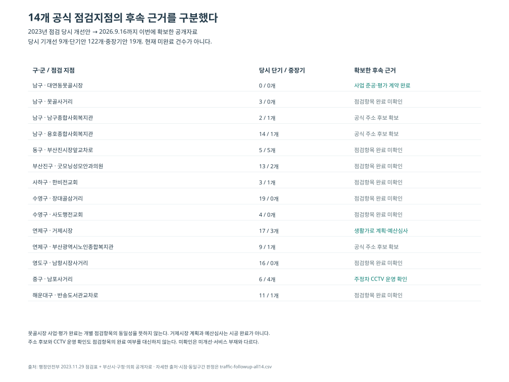
2023 개선 항목과 이번에 확보한 후속 근거를 구분했습니다. 미확보를 미조치로 표시하지 않았습니다.| 구·군 / 지점 | 당시 단기 / 중장기 | 추가 확인 결과 |
|---|
| 남구 / 대연동못골시장 부근 | 0 / 0 | 못골시장 일원 사업 2025.2 전체 준공, 2026.5.20 효과평가 계약상 완료. 원 2023 기개선 1항목과 사업 항목의 동일성은 별도 미확인. |
| 남구 / 못골사거리 부근 | 3 / 0 | 2023 점검 이후 해당 항목의 완료·미완료를 판정할 후속 원문을 이번 검색에서 확보하지 못함. |
| 남구 / 남구종합사회복지관 부근 | 2 / 1 | 부산시 공식 시설 목록: 동제당로 258 (우암동). 현재 공개 목록으로 2023 점검 범위는 확정하지 않음. |
| 남구 / 용호종합사회복지관 부근 | 14 / 1 | 부산시 공식 시설 목록: 이기대공원로 7 (용호동). 현재 공개 목록으로 2023 점검 범위는 확정하지 않음. |
| 동구 / 부산진시장앞교차로 부근 | 5 / 5 | 2023 점검 이후 해당 항목의 완료·미완료를 판정할 후속 원문을 이번 검색에서 확보하지 못함. |
| 부산진구 / 굿모닝성모안과의원 부근 | 13 / 2 | 2023 점검 이후 해당 항목의 완료·미완료를 판정할 후속 원문을 이번 검색에서 확보하지 못함. |
| 사하구 / 한비전교회 부근 | 3 / 1 | 2023 점검 이후 해당 항목의 완료·미완료를 판정할 후속 원문을 이번 검색에서 확보하지 못함. |
| 수영구 / 장대골삼거리 부근 | 19 / 0 | 2023 점검 이후 해당 항목의 완료·미완료를 판정할 후속 원문을 이번 검색에서 확보하지 못함. |
| 수영구 / 사도행전교회 부근 | 4 / 0 | 2023 점검 이후 해당 항목의 완료·미완료를 판정할 후속 원문을 이번 검색에서 확보하지 못함. |
| 연제구 / 거제시장 부근 | 17 / 3 | 2030 계획 PDF13쪽에 거제시장 인근 근린생활가로 약400m. 2024.12.12 연제구의회는 거제천로101~121 펜스 논의 후 주민참여 펜스 예산3740만원 전액삭감. 발언자도 정확한 위치를 재확인하려 했으며 2023 점검 구역과 동일성 미확인. |
| 연제구 / 부산광역시노인종합복지관 | 9 / 1 | 부산시 공식 목록의 부산시노인종합복지관: 거제천로230번길18(연산동). 명칭 축약의 동일기관 후보이며 2023 점검 구간은 미확정. |
| 영도구 / 남항시장사거리 부근 | 16 / 0 | 2023 점검 이후 해당 항목의 완료·미완료를 판정할 후속 원문을 이번 검색에서 확보하지 못함. |
| 중구 / 남포사거리 부근 | 6 / 4 | 2025.11.12 중구 공개 현황에 남포사거리 자동형 주정차 CCTV 포함. 09~21시 운영, 11:30~14시 단속 유예. 2022 횡단보도 시범사업 발표도 있으나 2023 점검 6항목 완료 증거는 아님. |
| 해운대구 / 반송도서관교차로 부근 | 11 / 1 | 2023 점검 이후 해당 항목의 완료·미완료를 판정할 후속 원문을 이번 검색에서 확보하지 못함. |
거제시장 주변 약 400m 생활가로는 계획입니다. 2024년 의회 심사에서는 거제천로 펜스 사업의 구간·경찰협의 근거가 논의됐고, 해당 3,740만원은 위원회 예산심사에서 전액 삭감됐습니다. 이를 2023 점검 17항목의 미이행이나 현재 펜스 부재로 해석하지 않습니다.
남포사거리에서는 2022년 횡단보도 시범사업과 2025년 주정차 CCTV 운영 자료를 확인했습니다. 단속시간은 09–21시, 점심 유예는 11:30–14시로 공지됐습니다. 단속 유예는 구조·구급 대응 공백을 뜻하지 않습니다.
못골시장 사업은 2025년 완료됐고 2026년 효과평가 계약 준공도 확인됐습니다. 기존 평가가 없다는 가설은 기각했습니다. 복지관 3곳은 공식 주소로 우암동·용호동·연산동의 지역 배경 후보를 추가했지만, 점검 구간이나 신고 지점은 확정하지 않았습니다.
14곳 전체 상태표 · 교통 후속 검색 기록
2026 소방 조사: 불량 판정과 비고를 구분했습니다
기장·동래·금정·부산진소방서의 2026년 8월 조사표 132행을 추출했습니다. 판정 131행, 조사연기 1행입니다. 소방시설 또는 피난시설에 불량이 기재된 행은 19행이며, 이 중 기장 6행에는 현지시정이 함께 기재됐습니다. 나머지 13행의 일반 비고란은 공란입니다. 금정은 연기 1행을 뺀 25행, 부산진은 34행 전체의 비고가 비었습니다. 조치완료 전용 열이 없으므로 불량 13행만의 조치정보 누락이나 관리공백을 뜻하지 않습니다.
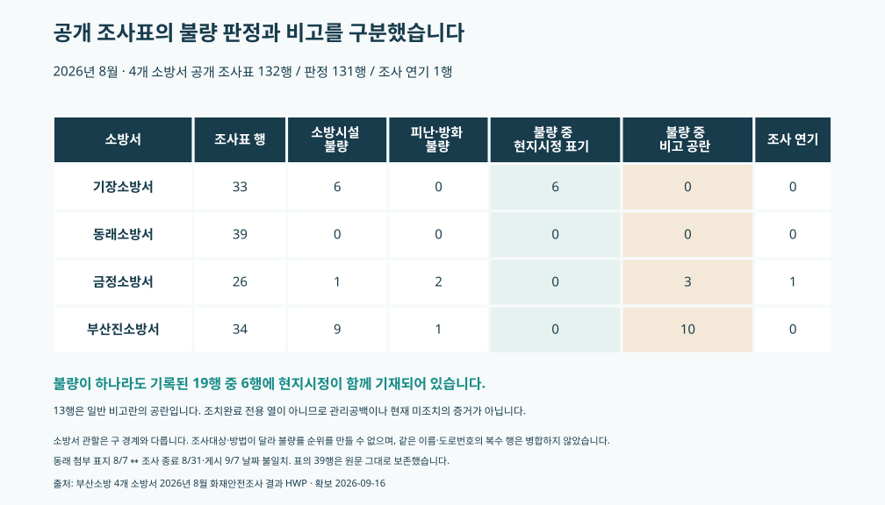
조사표 행 기준입니다. 조사 대상·범위가 달라 소방서별 불량률이나 지역 위험 순위를 만들지 않았습니다.| 소방서 | 조사표 행 | 판정 행 | 불량 기재 | 불량 중 현지시정 기재 | 불량 중 비고 공란 | 연기 |
|---|
| 기장소방서 | 33 | 33 | 6 | 6 | 0 | 0 |
| 동래소방서 | 39 | 39 | 0 | 0 | 0 | 0 |
| 금정소방서 | 26 | 25 | 3 | 0 | 3 | 1 |
| 부산진소방서 | 34 | 34 | 10 | 0 | 10 | 0 |
보완 방향: 공개표에 실제 있는 조사기간·조사범위·판정·비고를 구분해 제공합니다. 개별 지적사항·조치기한·완료일·재점검 결과는 이 공개표에서 확인되지 않습니다. 현재 미해결 시설 목록으로 공개하거나 과거 신고의 발생 건물에 배정하지 않았습니다.
동래 첨부 표지일은 조사기간·게시일과 불일치합니다. 동일 이름 또는 도로 건물번호를 공유하는 복수 행도 있어 132개 고유 시설로 표현하지 않았습니다. 소방서 조사범위는 구 경계와 같지 않습니다.
공식 원문: 기장 · 동래 · 금정 · 부산진
AED: 실제 정보 불일치와 기존 지원을 함께 확인했습니다
부산시는 2025년 6월 AED 4,431대와 일부 행정시스템 설치정보 불일치 사례를 발표했습니다. 연제구의회 2024년 답변은 공개목록 미표시에 기관의 공개 거부, 구급차 구분, 좌표 오류 등이 관련된다고 설명했습니다. 목록에 보이지 않는 장비를 없는 장비로 판단할 수 없는 이유입니다.
연제구는 비의무기관 소모품 교환과 구매지원을 운영하고 있었고, 당시 예산 부족이 크지 않다는 답변도 확인했습니다. 기장군에는 행사·단체여행·심장질환자 가정 등을 대상으로 최장 14일의 기존 AED 대여 절차가 있습니다. 새 대여사업이나 예산 증액 필요성을 자동으로 제안하지 않습니다.
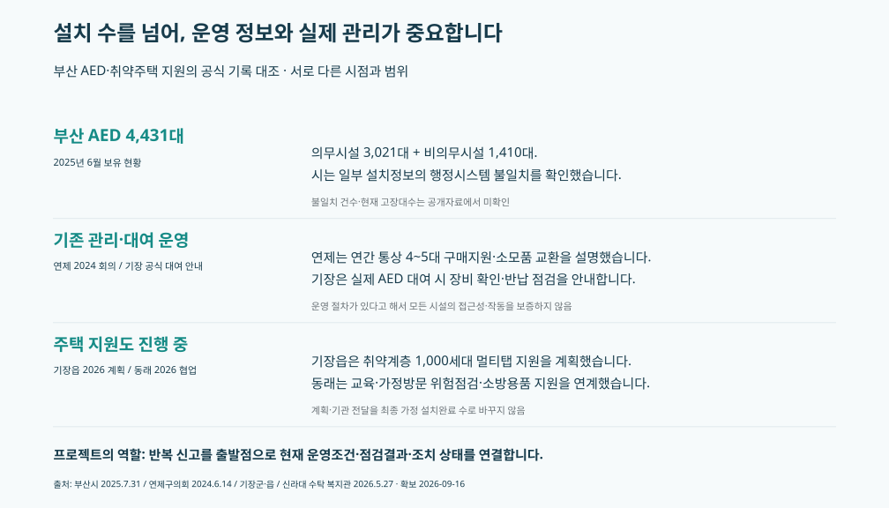
시스템 정보 불일치의 확인, 기존 지원 절차, 완료 실적이 아닌 계획을 구분했습니다.보완 방향: 공개 동의와 공식 운영정보를 존중하면서 고정·차량·대여 등록, 이용시간, 자료 확인일을 구분해 안내하는 것입니다. 공개하지 않은 위치를 추정해 채우지 않습니다. 실제 장비 점검·고장·이용 실적을 확보하기 전에는 환자 미이용이나 신규 설치 필요 수를 계산하지 않습니다.
부산시 AED 관리 발표 · 연제구의회 답변 · 기장군 대여 절차
주택: 신고 분류와 실제 주택구성을 다시 맞췄습니다
아파트 시설정보를 일반주택 화재에 바로 연결하지 않고 ‘고층건물(3층이상,아파트)’ 분류를 추가 계산했습니다. 정상 처리 조건에서 기장읍 56건, 온천동 76건입니다. 기장읍은 제외 전 비교 집합에서 17→14건인데 분석 대상에서는 11→13건으로 증감 방향이 바뀝니다.
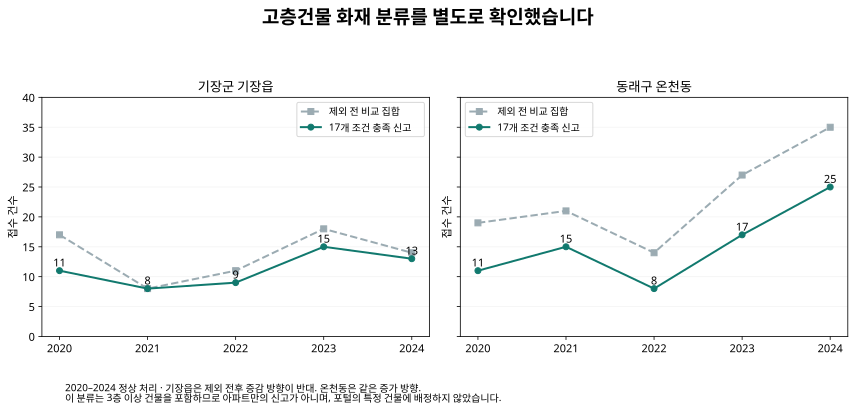
고층건물 분류는 아파트만의 신고가 아닙니다. 추가 조회한 아파트 포털 건물에 신고를 배정하지 않았습니다.보유 SGIS 자료의 주택구성도 새로 분석했습니다. 기장읍 총주택 19,738 중 아파트는 14,146이며 나머지 주택 유형도 있습니다. 온천1·2·3동은 아파트 구성비가 서로 다릅니다. 같은 동명으로 접수된 신고를 이들 행정동에 배분하지 않았습니다.
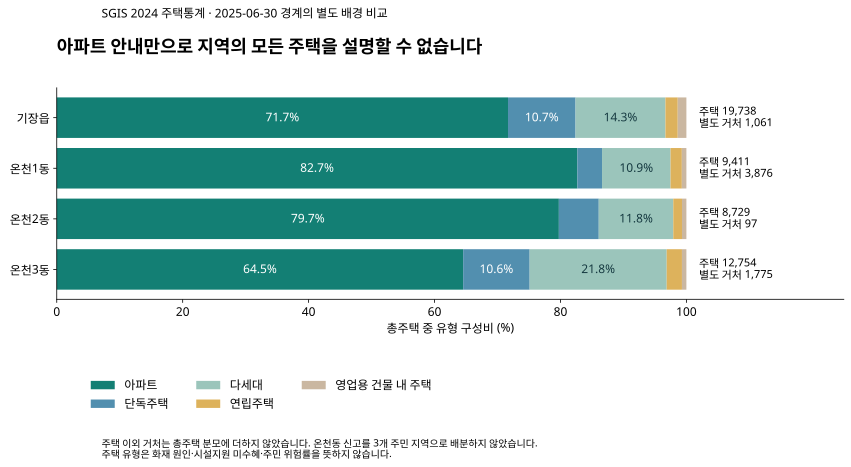
SGIS 2024 통계·2025-06-30 경계의 별도 주택 배경. 주택 이외 거처와 비공표 셀을 따로 관리했습니다.보완 방향: 아파트 주민에게는 기존 건물별 피난정보, 일반주택에는 기존 감지기·소화용품 지원조건을 구분해 연결합니다. 기장읍 2026년 1,000세대 멀티탭 지원은 계획이며, 최종 보급 완료나 미지원 세대 수로 표시하지 않았습니다.
SGIS 공식 제공자료 · 부산 주택 전체 집계
산악·수난: 기존 정비와 비개장 대응도 반영했습니다
| 지역 배경 | 확인한 기존 대응 | 시점·근거 수준 | 보완 방향 |
|---|
| 초읍동 산악 | 돌출 뿌리·암석 보행 우려에 보행매트·목재 편책 설치. 흙길 이용 의견을 반영하여 불필요 구역 설치 지양 답변. | 2025-01-14 답변 / 공식 답변으로 기존 설치 확인 | 구간별 보행 상태·정비 이력·이용자 요구를 함께 연결. 일괄 매트 증설 보류.
공식 근거 |
| 금성동 산악 | 북문로124 센터 매일09~18시. 지도사 해설은 예약 불필요하나 산림문화교육장 시설사용은 사전예약. 제9~21등산로 로프·표찰 정비 완료 발표. | 2025-04-22 발표; 제3권역 휴식년제 2021-04-01~2026-03-31 / 정비 완료 발표와 당시 안내 운영 | 과거 일반 안내 대신 출발 시점의 공식 탐방로·통제·지원센터 정보를 연결. 새 안전시설 설치안 보류.
공식 근거 |
| 우동 수난 | 취약시간 순찰·안전시설 점검·야간 입수통제·외국어 안내 등 시행. 폐장 후에도 안전요원·순찰·점검 계획. | 2025-09-09 발표; 해운대9/14폐장 / 개장중 시행 발표·폐장후 지속계획 | 개장·폐장을 무대응 여부로 변환하지 않고 해당 해변 관리조건과 확인시점을 함께 연결.
공식 근거 |
| 다대동 수난 | 감시탑2개소·고정식망루7개 설치 계획, 동측 우수관로 이설 완료 발표. | 2026-06-25 발표; 7/1~8/31 운영 / 개장 전 운영·안전시설 계획 | 동측 재개장 이후 구역별 안전관리 범위와 기존 감시시설을 먼저 대조. 증설 필요 미확정.
공식 근거 |
| 다대동 수난 | 야간 취약시간대 안전관리 연중 사업과 별도 해수욕장운영 사업 기재. | 2026년 채용계획, 페이지 갱신일 미확인 / 계획표상 사업 존재 | 야간 대응 신규 신설보다 구역·교대·실근무 일지 확인 후 기존 운영 연결.
공식 근거 |
초읍 찬물샘 정비에는 보행 우려뿐 아니라 흙길 이용 의견도 반영됐습니다. 금정산은 로프·표찰 정비 완료 발표가 있습니다. 해수욕장은 폐장 후 지속 대응 계획이 있어 비개장 신고를 미대응으로 계산하지 않았습니다. 사하구 야간관리 인력은 문서 버전별 수치가 달라 실제 배치 수로 확정하지 않았습니다.
상권은 원인이 아닌 현장 배경으로 적용했습니다
2024년 10월 보행환경 조사와 가까운 2024년 9월 말 부산 143,964업소를 사용했습니다. 부전동·대연동·광안동·신평동 전체의 업종 구성을 비교하며, 실제 시장 구간이나 역 주변 500m 범위로 임의 배정하지 않았습니다.
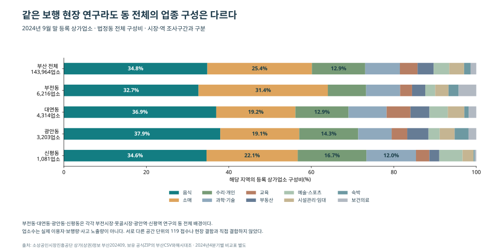
소상공인시장진흥공단 2024년 9월 말 목록의 동 전체 배경. 시장·역 이용자나 보행량이 아닙니다.| 구·동 | 등록업소 | 음식 | 소매 | 음식+소매 구성비 |
|---|
| 부산진구 부전동 | 6,216 | 2,030 | 1,949 | 64.0% |
| 남구 대연동 | 4,314 | 1,594 | 828 | 56.1% |
| 수영구 광안동 | 3,203 | 1,215 | 613 | 57.1% |
| 사하구 신평동 | 1,081 | 374 | 239 | 56.7% |
부전동의 소매 비중은 31.4%, 대연동·광안동의 음식 비중은 36.9%·37.9%입니다. 네 지역 모두 같은 해 네 분기에서 음식·소매 합계가 과반을 유지했습니다. 분기별 등록업소 총수 변화를 실제 신규 개업이나 사고 노출 증가로 해석하지 않았습니다.
업소 수는 보행자·방문객 수나 사고 노출량이 아닙니다. 현장 안내와 주변 상업공간의 배경을 설명하는 데 사용하고, 상권 때문에 사고가 발생했다는 인과관계로 해석하지 않았습니다.
공식 상권자료 · 4개 동 업종 전체 · 16구·군 업종 비교 · 분기별 비교
생활인구: 같은 동명 안에서도 활동시간이 다릅니다
2024년 205개 행정동의 12개월×24시간 자료 59,040행을 분석했습니다. 주거·직장·방문 값을 각각 비교했고, 다른 시간이나 범주의 인구를 합쳐 실제 이용자 수로 만들지 않았습니다.
부전1동의 방문 값은 00시 5,326.3명, 12시 17,718.2명으로 3.33배입니다. 부전2동은 각각 16,318.9명과 21,994.5명으로 1.35배입니다. 두 동 모두 12개월 각각 정오 값이 자정 값보다 높지만, 12개 기준월 평균곡선의 정점은 각각 14시와 19시로 다릅니다.
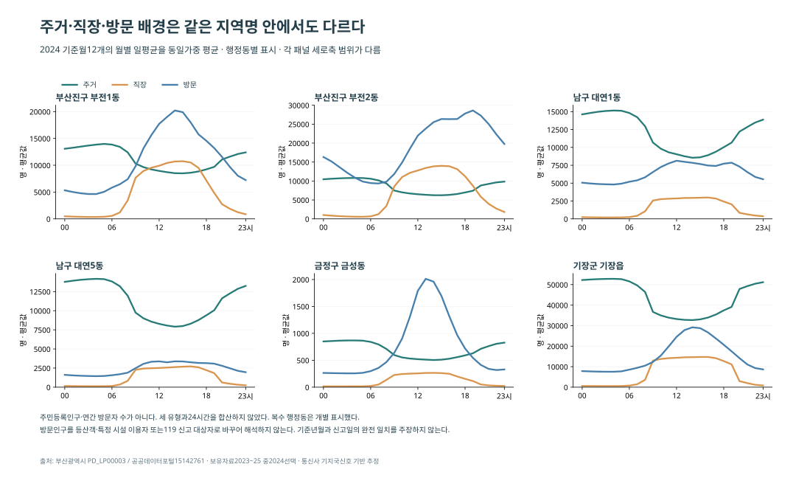
통신 기지국 기반 월별 일평균의 12개 기준월 동일가중 평균. 연간 실인원이나 주민등록인구가 아닙니다.주민 규모만으로 안내 시간과 이용 환경을 정하기 어렵다는 배경을 확인했습니다. 같은 ‘부전동’ 신고명에도 서로 다른 활동 배경이 존재하므로 단일 시간전략을 곧바로 적용하지 않았습니다. 이 생활인구를 신고율 분모·환자 수·시장 이용자나 등산객 수로 해석하지 않습니다.
공식 시간 생활인구 정의 · 205개 동 시간 비교 · 전체 보조자료의 채택·불채택 이유
예방·지원 보완 결과와 적용 범위
| 보완 대상 | 확인된 근거 | 결과에 반영한 내용 | 운영 변경의 판단 범위 |
|---|
| 보행 지역 | 공식 점검·보차분리 현장조사·기존 사업 | 시장 내부·접근도로·횡단 구간과 사업 시점을 분리해 표시 | 신호·시설 변경은 동일 구간의 현재 상태·설계·경찰 협의 필요 |
| 소방 점검 | 불량 19행·현지시정 6행·비고 공란 13행 | 조사 판정과 일반 비고를 구분한 결과표 | 비고 공란을 관리공백이나 미완료로 판단하지 않음 |
| AED 안내 | 행정정보 불일치·공개 제한·시간표·기존 대여 | 등록 유형·이용시간·기준일·공식 이용 절차를 구분 | 실제 접근·작동·사용 실적 없이 신규 설치 수 산정 안 함 |
| 주택 안내 | 주택 유형 차이·기존 시설정보·지원 계획 | 아파트 피난정보와 일반주택 지원조건을 구분 | 미지원 가구 수·설치 효과 미확정 |
| 산악·수난 | 반복 시기·기존 정비·통제·폐장 후 관리 | 출발 시 확인할 공식 운영·통제 정보와 정비 이력을 연결 | 확인되지 않은 인력 증원·전면 시설 설치 제안 안 함 |
완성한 결과는 전 지역 신고 비교, 현장·운영 근거의 대조, 그리고 이를 이용자가 확인할 수 있는 결과 서비스입니다.
이 웹 시제품을 사용해 실제 예방효과가 생겼다는 평가는 아직 수행하지 않았습니다. 이번에 입증한 현장 사실과 정보 조건을 근거로 결과 구조를 만들었으며, 효과와 현재 미충족 수요를 상상으로 채우지 않았습니다.
검증·출처·재현
기존 원본과 전처리본은 유지했습니다. 5년 전처리본 해시, 기존 제외 전후 집계, 새 지역×유형×시간 합계, 공식 문서의 숫자·시점·분류를 독립적으로 대조했습니다. 132개 소방 조사행과 131개 판정행, 시설명 중복, 주택 비공표값, 체험복 실험의 제외 구간도 구분했습니다.
자료 수집 범위와 미확보 항목은 결과표 및 검색 기록에 남겼습니다. 원문을 확인하지 못한 결론은 확정값으로 표시하지 않았습니다. 기관에 자료 요청을 발송하거나 비공개 기록에 접근하지 않았습니다.
전체 보고서 · 실행 방법 · 수집 출처 목록 · 후속 확인 대상과 필요한 기록